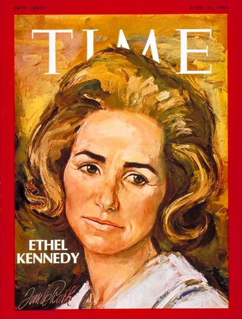

Chương 9

obert Kennedy là một phối hợp của sự phức tạp đầy mê hoặc. Tôi nhận ra điều này ở lần đầu tiên gặp gỡ ông ta. Chúng tôi hẹn gặp tại cơ sở làm việc của ông, nằm trong một cao ốc dùng để đặt văn phòng của các Thượng nghị sĩ ở Hoa Thịnh Đốn. Đây là một cuộc gặp gỡ trong chức vụ của ông, có tính cách nghiêm cẩn. Tôi đến để yêu cầu ông gia nhập vào Chủ tịch đoàn các tổ chức Mỹ Á do tôi khởi xướng. Tổ chức này hướng về các đứa con lai vô thừa nhận, hậu quả của các binh sĩ Hoa Kỳ phục vụ tại Á Châu.
Cơ sở làm việc của Robert Kennedy hoàn toàn khác biệt với cơ sở của người em ông, Edward Kennedy, mà tôi có dịp đến hai năm trước đây. Cơ sở làm việc này gồm nhiều văn phòng thật yên tĩnh và ngăn nắp, và hầu hết đều trống vắng. Không phải ngồi chờ, tôi được hướng dẫn ngay vào văn phòng riêng của ông, trong đó, chỉ đơn độc một mình ông ngồi phía sau bàn viết. Đó là một căn phòng vĩ đại, trang trí đơn giản nhưng thẩm mỹ, và cả cái bàn viết của ông cũng tương xứng với căn phòng, nó cũng vĩ đại đến nỗi người ngồi phía sau nó không nghĩa lý gì hết.
Tôi thấy một người đàn ông khá nhỏ, hay có thể khung cảnh đã làm tôi cảm thấy như thế, một người đàn ông trẻ, có khuôn mặt hơi buồn bã, nhưng đôi mắt của ông là một đôi mắt xanh biếc bùng cháy.

Martin Luther King và Robert Kennedy.
Đôi mắt đó có thật sự màu xanh biếc hay không? Hay chúng toát ra một sự gay gắt vào lúc ấy, đã khiến tôi tưởng lầm là màu xanh biếc? Dù sao, tôi không thể làm được, đôi mắt ấy không cười, quả thực ông ta không cười. Tôi trình bày câu chuyện, tôi đưa ra lời yêu cầu của tôi. Ông chăm chú nghe, thái độ của ông không thay đổi. Tôi chờ ông đáp. Đó là một tiếng không đơn giản. Ông quá bận rộn. Ông không thích cho mượn tên của ông. Việc làm đó có vẻ là một chủ trương tốt đẹp, ông nói, nhưng còn có nhiều chủ trương khác cũng tốt đẹp. Gia đình của ông đã chủ trương lo lắng cho các đứa trẻ trì độn. Ông nhổm người dậy khỏi ghế ngồi, chứng tỏ không có gì thêm để nói nữa. Ông ta dứt khoát và không hề tạo ra bất kỳ cử chỉ màu mè nào. Tuy nhiên, tôi có mục đích khi đến đây và tôi cũng có thể chứng tỏ quyết tâm của tôi. Tôi nói:
Ông Kennedy, tôi cần tên của ông, bởi dân chúng ở Á Châu tin cậy ông. Nếu họ thấy ông quan tâm đến những người mới mẻ này, những đứa trẻ Mỹ Á, họ sẽ chấp nhận chủ trương đầy ý nghĩa này. Và dĩ nhiên họ sẽ giúp đỡ, và chừng ấy vấn đề mới mong có giải đáp thật sự.
Ông Kennedy, những đứa con lai này là những kẻ không có quốc gia. Người Mỹ chúng ta xem chúng như là người Á Châu. nhưng tại Á Châu các đứa trẻ chỉ mang họ của cha, nghĩa là chúng thuộc về người cha, và vì vậy, ở Á Châu, chúng được xem như là người Mỹ. Đương nhiên chúng không có quốc gia. Chúng vô tổ quốc, vô chính phủ. Chúng là kẻ ngoại chủng đối với những nơi mà chúng được sinh ra.
Ông lịch sự xin phép rời khỏi phòng, và tôi giữ ông lại. Tôi từ chối ra về, cho đến khi nào tôi đạt được mục đích mới thôi. Ông ngồi xuống ghế lại. Ông nghe tôi nói. Tôi nhìn thẳng vào đôi mắt rực sáng đang chăm chú nhìn tôi, ông không ngắt lời tôi. Khi tôi dứt lời, ông nói một cách bình thản:
"Tôi sẽ nghĩ và viết thư cho bà".
"Cám ơn ông", tôi nói và rời khỏi phòng.
Tôi cho rằng ông muốn hội ý với gia đình, dĩ nhiên, người mang họ Kennedy không thuộc về cá nhân của họ. Trong vòng một vài hôm, tôi nhận được thư của ông. Ông bằng lòng, tên của ông đứng trước tên của chúng tôi vẫn còn sức mạnh, dù rằng ông đã chết.
Robert Kennedy là con trai thứ ba trong bốn người con trai của gia đình Kennedy. Hình vóc của ông nhỏ nhất trong bốn anh em, tuy vậy, đối với tôi, ông lại là người có dáng vè hùng tráng nhất. Và thiên vị tới đâu, ai cũng phải cho rằng ông là một người kém đẹp trai, nhưng đối với tôi ông lại là một người lôi cuốn nhất. Khi ông bước vào một nơi nào đó, ông mang đến cảm giác của một sự đổi thay không khí kỳ lạ, đầy cá tính, đầy khôi hài, một loại thời trang lệch lạc khiến có thể gây một trận cười. Ông có thể gây cười cho kẻ khác. Nhưng tôi không chắc ông chấp nhận cười kẻ khác một cách dễ dàng.
Vì nhỏ con nhất trong các anh em, ấu thời ông đã phải học cách chống chọi với những khó khăn để tinh thần phấn khởi, không mềm yếu và không sợ sệt.
Tính ông, vì vậy, không mấy dịu dàng. Ông nói thẳng tất cả những gì ông nghĩ. Sự hoà giải không phải là nghệ thuật của ông. Tuy vậy, khi ông khởi đầu làm một việc gì, ông tỏ ra rất khôn ngoan.
Ông là một loại đàn ông phức tạp, như đã nói, một sự phối hợp của nhiều người đàn ông, bất cứ lúc nào cũng thấy như thế. Với các con, ông để hết lòng khi đùa với chúng và bỗng chốc ông có thể trở thành một người cha nghiêm khắc. Tính tình ông dễ xúc động, nhưng ông cũng có thể lạnh lùng, bình thản khi bị chỉ trích.
Ông cũng là con người hầu như khắc khổ với bản thân và điều khiển cả mọi thói quen. Và bản tính cứng cỏi của ông là nguyên nhân mời mọc sự đả kích nhắm vào, và dù luôn luôn xác tín, ông không bao giờ chấp nhận chủ nghĩa bảo thủ truyền thống. Bản chất của ông là hướng dẫn, là chỉ huy, nhưng biết tỉnh ngộ kịp lúc. Trong ông là những ẩn chứa sâu xa của tuổi trẻ, của thành thật, của tìm hiểu? của trắc ẩn.
Trên tất cả, đó là tinh thần mạnh mẽ của ông. Ông được sinh ra để lãnh đạo và điều không thể nghi ngờ để độc tài. Nhưng độc tài kèm theo biện minh xác đáng. Người ta yêu ông hoặc ghét ông, ông không lưu tâm đến, một khi ông đã đeo đuổi, trong đường lối cứng rắn của ông, một nguyên lý, một công việc mà ông muốn đạt đến trong sự hiến dâng.
Ông không dịu dàng với chính ông. Không hề có bất kỳ sự dịu dàng nào trong ông. Sự dễ dãi sẽ được thay đổi sang sự cương quyết một cách đột ngột. Thường khi tính nghiêm nghị của ông được trút bỏ nhanh chóng để trở thành một người cha trẻ tuổi vui đùa với các con một cách cởi mở.
Ngôi nhà của ông chứa đầy trẻ con: mười đứa và thêm đứa thứ mười một chưa ra đời khi ông chết. Riêng ông, ông vẫn nghĩ là ông được thêm hai đứa, con của người anh, John F.. để lại. Ông tỏ ra có sự hoà hợp với trẻ con. Chúng kính phục ông và đeo sát bên ông.
Ông thường chơi đùa với chúng, nhưng các trò chơi mà ông bày vẽ đều hóc búa.
Robert Kennedycó ma lực của một người mang họ Kennedy không những đối với người yêu ông mà ngay cả những người ghét ông nữa. Những người quy tụ bên ông; họ muốn đụng chạm vào ông, một đặc dị: trong cảm giác của quyển Thánh kinh, toát ra từ ông và ngay cả khi ông không hề đưa ra một nỗ lực nào nhằm chi phối họ. Ông không nói nhiều. Ông như kẻ bàng quan trước ý kiến của kẻ khác. Trong một cuộc đối thoại, kẻ nói không phải là ông. Ông có thể đáp hoặc không. Dù vậy sau cùng mọi người đều hiểu ông.
Một hành vi của Robert Kennedy được xem khó hiểu, đó là việc ông kết thân với Joseph Mc Carthy. Dĩ nhiên đó là sự thiếu kinh nghiệm và yếu kém, đã khiến cho Bobby bị lôi cuốn vào các cuộc tấn công đầy bệnh hoạn của vị Thượng nghị sĩ này và liên tục, cả hai đã gây nhiều tổn thương cho quốc gia. Anh của ông, John Kennedy, đã thường tỏ ra thiếu kiên nhẫn trước một Mc Carthy đầy sự kỳ quặc đó.
Robert Kennedy không có được kinh nghiệm một cách thông minh và quảng bác của anh ông: Tổng thống John F. Kennedy. Ông chỉ có thể là một người chỉ huy giỏi, nhưng không thể là một kẻ thuyết phục hay. Ông không biết che giấu chủ tâm để tiến tới thắng lợi sau cùng. Trên một vài phương diện ông giống cha ông hơn những anh em khác của ông. Ông không tự quan trọng hoá ông, những gì cần thiết ông vạch ra không phải để ông lưu tâm, mà chỉ có tính cách để dễ dàng xúc tiến công việc. Ông khinh miệt tính lười biếng, chậm chạp, và yếu kém tổ chức, nhưng ông chỉ ý thức vừa đủ trong vị thế riêng của ông.
Phức hợp của những nghịch thường ấy rất khó để hình dung những gì mà Robert Kennedy có thể đạt đến một khi ông còn sống. Chắc chắn tài năng của ông chưa được tận dụng. Hình như tài năng phát sinh mạnh mẽ đến một cái tuổi nào đó trong đời một người, rồi nó sẽ chậm lại hoặc dừng hẳn. Sự sáng suốt trở nên mong manh, trí thông minh trở nên trì tệ hơn, ngay cả khi tài năng vượt quá mức độ của nó.
Robert Kennedy vẫn còn ở bèn này lằn mức, trí tuệ chưa mãn khai, tư tưởng chín chắn chỉ đang khởi đầu. Đối với John Fitzerald Kennedy, ông còn phải trải qua một khoảng cách xa để được bằng. Đó là không nói John không chỉ không có thời giờ, mà ông còn không có lúc nào nhàn rỗi để học hỏi thêm, để sống đời sống của trí tuệ, bởi thân xác thường khi đau yếu của ông.
Trái lại, Robert Kenned ngoài một thân xác tráng kiện, ông còn có những khoảng thời gian ngừng nghỉ dành cho trí tuệ, cho suy tư. Khi ông cảm thấy bực bội, bồn chồn, lưu tâm đến một cuộc đua phải đạt đến, điều ấy cho thấy ông đã dốc hết toàn lực thể xác một cách mãnh liệt. Đó cũng là đặc tính của người em Kennedy này.
Sau cái chết của anh ông, ông tự nỗ lực để leo lên đỉnh núi hiểm yếu, trong chiều hướng thử thách sự can đảm riêng của ông. Chứng tỏ nhu cầu riêng của ông, để thắng cuộc. Đó là tinh thần không có gì mới mẻ của một người trong gia đình Kennedy. Đó là kỷ luật bản thân và tự lực chiến thắng. Và vì vậy, dù cùng với một bộ tham mưu, ông tiến đến: nhưng chỉ tiến đến bằng sức mạnh hầu như hoàn toàn của chính ông. Điều này cho thấy tại sao họ phục vụ ông một cách thuỷ chung trong sự hiềm khích.
Người đàn bà mà người đàn ông này đã chung sống như thế nào? Ethel Skakel Kennedy cư ngụ ở Hickony Hill tại Mc Lean, thuộc tiểu bang Virginia, không xa Hoa Thịnh Đốn mấy, trong một ngôi nhà to lớn đầy đủ tiện nghi sơn toàn màu đỏ chói, bắt mắt mọi người từ tiền diện. Dĩ nhiên, trong nhà ấy còn gồm cả Robert Kennedy và các đứa con của họ.
Tôi biết Robert Kennedy yêu thương vợ, sâu xa và hoàn toàn. Ông yêu nàng, vì đối với ông, nàng đáng được yêu. Một người đàn bà gồm đủ những yếu tố để ông quan tâm đến, đặt trên tất cả, ngay cả các đứa con của ông. Nàng hiểu ông. Nàng biết ông cần sự vững bền, ông cần biết nàng ở đâu và vì vậy, nàng ở nhà, nơi mà ông muốn.
Một lần nàng đã nói: Tôi không nghĩ vợ của một chính trị gia phải dính líu đến chính trị. Tôi nghĩ việc mà người vợ phải làm là sắp xếp nhà cửa thành một chỗ trú tuyệt hảo cho chồng khi ông ta trở về nhà, một nơi để ông ta quên đi các vấn đề chính trị.
Bobby (tục danh của Robert Kennedy) có thể là một người cha lý tưởng, thích đùa nghịch với các con, khuyên nhủ và dạy bảo chúng, nhưng cũng có những lúc mà ông phải quên chúng, và ông có thể quên chúng, vì ông biết có nàng ở nhà.
Nàng tin tưởng các đứa trẻ được hưởng khoảng ấu thời hạnh phúc đầy đủ, qua những gì mà cha mẹ chúng đã cho. Nàng nói: Khi chúng lớn lên, đời sống gặp đủ mọi khó khăn. Chúng tôi cố thấm nhuần trong chúng ý thức, khi chúng trưởng thành, là chúng sẽ phải cung phụng xã hội. Chúng phải học hỏi điều này bằng cách nhận xét từ kẻ khác và giúp đỡ kẻ khác.
Ethel không phải là một người đàn bà nhỏ nhặt.
Buồn vui, bè bạn, ngoại cảnh ít được nàng để tâm đến.

Ethel Kennedy
Khi đau ốm, nàng cũng không hề phàn nàn với ai, ngay cả đối với chồng. Nếu giận dữ, hoạ hoằn lắm, nàng mới nói ra tất cả, và rồi quên đi. Tôi không nghĩ đến việc nàng sử dụng sự khêu gợi thân xác như là một vũ khí hoặc như là một phần thưởng, như nhiều người đàn bà khác đã làm. Nữ tính của nàng mạnh mẽ, hoàn hảo, như mọi lãnh vực khác, dĩ nhiên đặc biệt trong lãnh vực một người vợ.
Ethel biết chồng có nhiều sở thích, mặc dù đời sống chính trị và tham vọng chính trị vẫn là ưu tiên đối với ông. Nàng không tỏ vẻ bực bội tính đam mê các môn thể thao của chồng và đôi khi nàng cùng chia sẻ, nếu có thể nàng đồng ý rằng các ông cần phái có bạn hữu, nên không phàn nàn, ganh ghét, ngay cả bạn hữu của chồng là những người đàn bà. Ethel biết, ngoài nàng ra, không ai quan trọng hơn đối với chồng nàng, và như vậy là quá đủ. Khi về nhà, chồng nàng không bao giờ thấy nàng bận bịu với bất kỳ rắc rối và phiền toái nào, những vấn đề riêng của nàng đã được nàng giải quyết và nàng chỉ chia sẻ với chồng những vấn đề nào xét thấy không thể giải quyết một mình. Ethel không cần sự mến yêu, kính phục của kẻ khác, nàng muốn: chỉ Robert Kennedy mà thôi.
Khi xuất ngoại, Robert Kennedy gởi điện tín cho vợ mỗi ngày bằng chính ngôn ngữ xứ sở mà ông đang viếng thăm. Ethel nâng niu, những chứng tỏ sự lưu tâm tự nguyện đầy yêu thương ấy của chồng, như mọi người đàn bà khác. Nhưng nếu chồng nàng không làm như vậy, nàng vẫn không nghi ngờ. Họ kết hôn, bằng chân thật, và họ vui vẻ có con với nhau, nhiều con với nhau. Ethel thích có con, trông đợi một đứa con ra đời, những đứa con của Robert Kennedy, một cách kiêu hãnh.
Dĩ nhiên, làm sao Ethel không biết đời sống của chồng đầy hiểm nguy. Nàng biết, chồng nàng có thể bị sát hại, nếu cứ tiếp tục chạy theo chiếc ghế Tổng thống. Nàng sống thường trực trong hãi hùng, nhưng nàng giấu giếm chồng. Nàng không để lộ cho chồng thấy bất kỳ nỗi lo sợ nào của nàng. Nàng đã có kinh nghiệm, đã chuẩn bị để sẵn sàng đón nhận thảm kịch.
Song thân và người anh yêu mến của nàng, George Jr. đều thiệt mạng trong một tai nạn rớt phi cơ khác thường. Tám tháng sau đó, người chị dâu của nàng, Joan Patricia, ngạt thở ngay trong bữa ăn và chết sau đó. Ethel đã biết nhiều đến thảm kịch.
Nàng bỏ hết thời giờ lo cho gia đình con cái. Nàng chứng tỏ sự hạnh phúc, vui vẻ và yên ổn, luôn luôn tán thành những việc làm của chồng, luôn luôn khuyến khích ông làm những gì theo ý nguyện, theo mong muốn.
Nhưng đồng thời nàng âm thầm tự chuẩn bị để đón nhận những gì có thể xảy ra. Nàng biết, và nàng đã sắp xếp đón nhận như thế nào và nàng sẽ làm gì sau đó. Gia đình nàng sẽ được tiếp tục như thế, dù chồng nàng có ra sao. Các đứa trẻ sẽ không được quên cha chúng. Hình ảnh, lưu vật của chồng sẽ không được xê dịch. Tất cả phải hiện hữu, như chồng nàng vẫn còn tồn tại.
Tuy nhiên, Ethel vẫn vui vẻ với chồng, bất cứ lúc nào, trong đời sống hiện tại, nàng tháp tùng với chồng mọi lúc, mọi nơi nếu có thể, cả ngay khi nàng có mang. Vào năm 1961, Tổng Thống Kennedy phái vợ chồng nàng đại diện ông sang Ivory Coast tham dự lễ kỷ niệm độc lập năm đầu của xứ này, và nàng đã nói tiếng Pháp, thứ ngôn ngữ được nhớ lại từ ngày nàng còn đi học và nàng cười đùa với mọi người, họ đã yêu mến tính tình dễ thân cận và cởi mở của nàng.
Năm kế, Tổng thống lại phái họ đi vòng quanh thế giới. Liên bang Xô Viết mời, nhưng họ từ chối.
Chuyến đi gặt hái được nhiều thành quả và nàng tự hài lòng.
Ở Ý, nàng được các thông tín viên Hoa Kỳ tặng một xì-cút-tơ, nàng đã lái nó và thử sức ngay với một chiếc Fiat. Ở Thái Lan, nàng phiền trách nhẹ nhàng một viên chức bộ ngoại giao đã lơ đễnh đến nỗi quên gửi hành lý nàng cùng một chuyến bay. Nàng không nổi giận, nàng đang hạnh phúc, vì nàng được đi với chồng.

Trở về nhà, đời sống vui vẻ thường nhật lại tiếp tục, căn nhà không lúc nào vắng khách. Các bạn đã phong nàng làm bà nội trợ trong năm, cho dù nàng nấu nướng kém cỏi. Nhưng nàng đâu cần làm bếp, đã có người làm thế cho nàng, nàng có bảy người giúp việc tất cả, mỗi người nàng cắt đặt mọi công việc và nàng đòi hỏi họ phải vui vẻ và dịu dàng.
Một lần, khi bà quận công ở Devorshire đến nhà dùng cơm, sau một câu nói duyên dáng, Ethel thêm: Xin Thượng đế giúp Bobby mua cho tôi một cái bàn ăn lớn hơn 1. Dĩ nhiên nàng đã biết, đã bắt đầu nghĩ đến cái gì sẽ xảy ra tiếp theo sau những ngày Tổng thống, anh chồng của nàng bị giết. Nàng nhận thấy tinh thần của chồng suy nhược. Thể xác của Bobby hao mòn xanh xao và quần áo của ông như chỉ treo trên thể xác ấy. Ông thường bách bộ thật lâu, cô độc với con chó Brumus cao lớn của ông lẽo đẽo bên chân. Nàng biết, chồng nàng sẽ tiếp nối bước đường của người anh.
"Kính thưa Tổng Thống, kính thưa quý vị, thay mặt cho bà Kennedy, các con bà, cha mẹ và các người chị của Robert Kennedy, tôi muốn nói ra những cảm nghĩ của chúng tôi đối với những người cùng nhỏ lệ với chúng tôi hôm nay, trong ngôi giáo đường này, và khắp nơi trên thế giới....".
Thời gian tiếng nói được thốt lên là ngày 8 tháng 6 năm 1968, và không gian là ngôi là thờ St. Patrick ở Nữu Ước. Tiếng nói đó là tiếng nói của Edward Moore Kennedy. Ethel Kennedy, mặc tang phục, tấm màn đen che mặt, đứng lặng nghe, với các con bên cạnh, nàng tự nghĩ là nàng đã chuẩn bị. Nhưng, thật ra, nàng chưa chuẩn bị gì cho nàng hết, chưa gì hết.
Bây giờ như vậy là Bobby đã ra đi. Ethel gánh vác thế cho chồng, trong lối đi riêng của nàng. Nàng nói ra, rõ ràng hơn bao giờ, những gì mà chồng nàng đã tranh đấu để đạt đến. Dù cho Ethel mới chỉ bốn mươi mốt tuổi, chồng nàng vẫn là Robert Kennedy. Nàng là một kẻ trung thành với giọng họ Kennedy. Nhưng nàng cũng tự giải quyết. Đời sống của nàng đã sắp xếp. Nàng sẽ không tự vấn, nàng sẽ không cho phép nàng buồn bã, nàng cũng không chấp nhận sự buồn bã từ kẻ khác. Sự chiếm hữu của nàng bấy giờ là đứa con của nàng.
Một gia đình lớn đối với Ethel đã quen thuộc. Nàng là đứa con áp út trong bảy anh em. Người cha gốc Hoà Lan của Ethel là một người đàn ông tự lập, khởi đầu với nghề thư ký hoả xa, và ông không bao giờ quên thực tế này. Mẹ nàng là một người đàn bà Ái Nhĩ Lan vui vẻ và chịu khó. Tính tình dễ thân cận, thực tế và căn cơ của Ethel Kennedy, dĩ nhiên là được thừa hưởng và học hỏi từ những nguồn gốc đó.
Cho dù hiện tại nàng sống trong một ngôi nhà vĩ đại toạ lạc trên một mảnh đất rộng đầy cảnh sắc, nàng vẫn sống một đời sống đơn giản, quen thuộc như ngày nào. Nàng dùng điểm tâm lúc bảy giờ sáng với các con, lái xe đưa một số đến trường, và trở về nhà cho đứa con út ăn. Đến chiều, nàng lại ăn với các con và đọc sách cho chúng nghe.
Nàng có nhiều bạn, họ đến Hickory Hill nườm nượp khi Bobby còn sống, và hiện thời một số vẫn còn đến. Phần đông họ đều là những nhân vật lừng danh.
Có nhiều phiền toái xảy ra, khiến nàng quyết định không tháp tùng những cuộc thăm viếng các ngôi mộ Kennedy, dù nhân danh lý do nào. Nàng chỉ đi thăm mộ chồng một mình.

Như Rose Kennedy, nàng có đức tin tôn giáo sâu xa, và nàng thường đọc Thánh kinh để ru ngủ các con.
Quả thật, có những tương tự giữa hai người đàn bà này, trong đó sức chịu đựng được nhìn thấy rõ hơn hết, mà theo tôi, nó cũng đã bắt nguồn từ đức tin tôn giáo. Rose Kennedy từng nói: "Tôi không hiểu tôn giáo như là một vấn đề chính trị hoặc quốc gia, mà tôi nghĩ tôn giáo là cái gì lạ lùng đối với trẻ con. Phần nhiều trẻ con đều đuổi theo mục đích và sự vững bền này".
Chú thích:
1 Câu này cho thấy Ethel biết là Robert sẽ ứng cử Tổng Thống. Nàng cầu nguyện cho chồng đắc cử. (Ghi chú của người dịch).